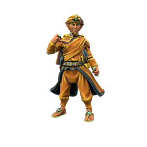

Kash Pasanhara
He/Him, Kasharite Elf
Sultan of Kashar, the inheritor of a millenium long legacy: the Kash dynasty. The previous Sultan, Tarcata, undertook significant public works and expansion projects which made him popular among the people of Kashar, so when his son inherited the Sultanate expectations were high. Unfortunately, this good will only served to make Pasanhara complacent, lazy and entitled. The Kash legacy still carries weight and garners good will, but public opinion is fast turning against this despotic leader.
